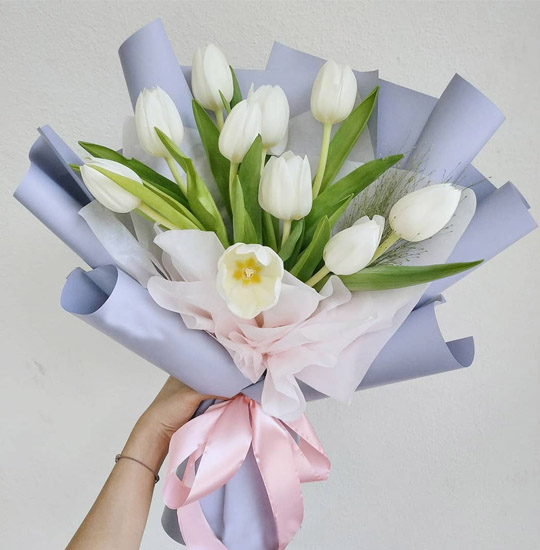
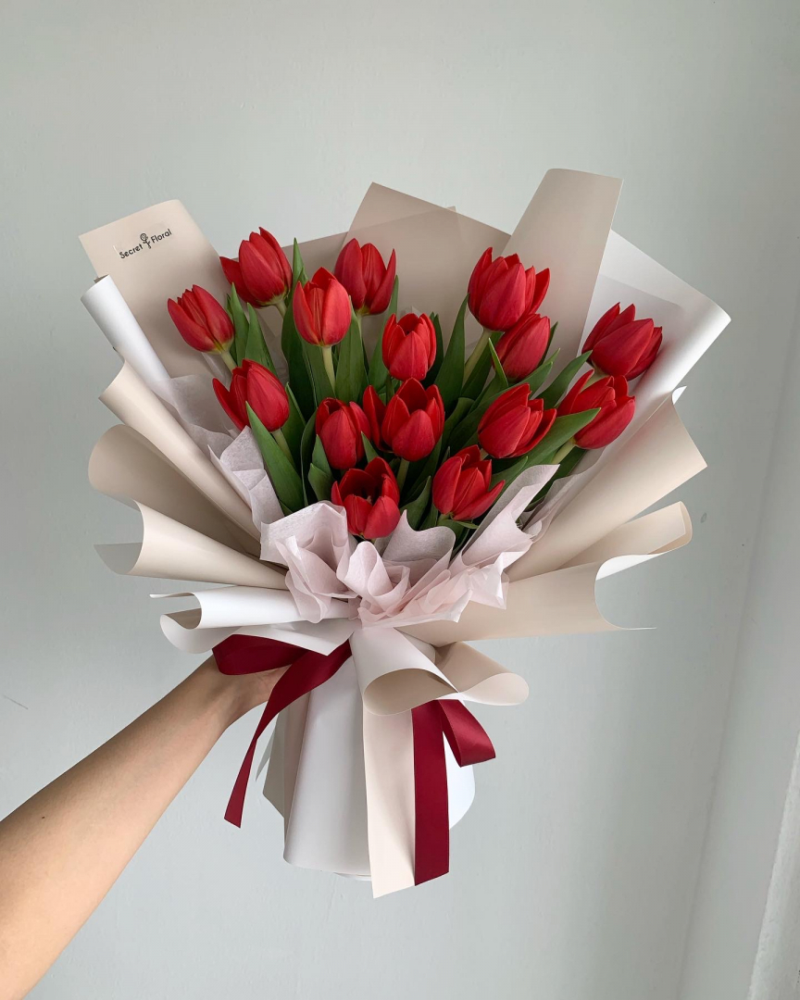
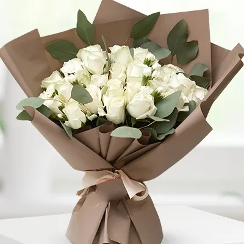
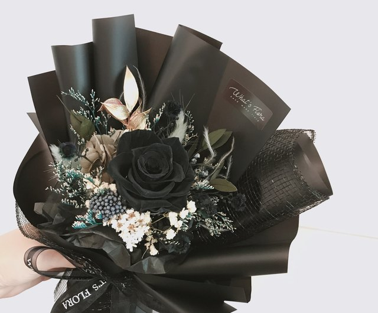
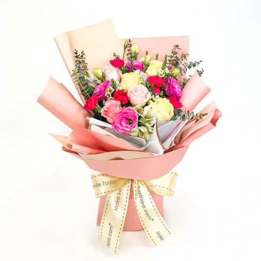
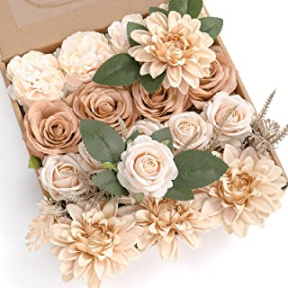
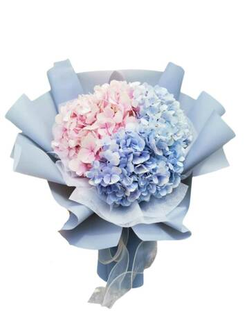

Tulips are a popular flower because they are long lasting and convey a variety of sentiments. This bouquet features a bunch of 10 stems beautiful white tulips in a bouquet.
Beautiful Whisper Tulip Bouquet
₱2,499.00
Tulips are a popular flower because they are long lasting and convey a variety of sentiments. This bouquet features a bunch of 10 stems beautiful white tulips in a bouquet.

Cloud Purple Tulips
₱3,799.00
If you give me all your love today, I will give you anything my soul could offer. I love you, baby. I know our future will be brighter than the sun and more beautiful than a rose.

Their deep red hues evoke feelings of passion, love, and lust – making them an especially popular choice for new, younger couples.
Dream Love Red Tulips
₱2,899.00
Their deep red hues evoke feelings of passion, love, and lust – making them an especially popular choice for new, younger couples.

Sancia Love Blue Tulips
₱4,999.00
Blue tulips are thought to symbolize tranquility and peace because of the blue color. When given to someone else, the flowers convey a message of trust and loyalty. In general, tulips are thought to send a message of perfect love, though red tulips are most strongly associated with the emotion.

White roses symbolize loyalty, purity, and innocence.
Aelin White Rose
₱2,999.00
White roses symbolize loyalty, purity, and innocence.

The black rose symbolized power and strength. Since then, it has become a popular symbol in fiction.After dying out slightly, the black rose resurfaced in the Victorian Era through the Language of Flowers and was very popular in gothic and macabre literature.
Zehra Black Rose
₱3,999.00
The black rose symbolized power and strength. Since then, it has become a popular symbol in fiction.After dying out slightly, the black rose resurfaced in the Victorian Era through the Language of Flowers and was very popular in gothic and macabre literature.

Multicolored roses are a unique choice if you want to combine messages. For example, a yellow rose with red edges can combine the rose color meanings of friendship and love, or a pink and yellow multi-colored rose can symbolize both warmth and joy.
Inara Assorted Roses
₱4,599.00
Multicolored roses are a unique choice if you want to combine messages. For example, a yellow rose with red edges can combine the rose color meanings of friendship and love, or a pink and yellow multi-colored rose can symbolize both warmth and joy.

Evren Blue Rose
₱2,999.00
Blue roses show that you intend to build trust, and you're ready for long term commitments. It can also mean that you're waiting for a miracle to happen since your love can't be reciprocated. This is because blue roses don't exist in nature, but humanity has beaten all odds and eventually succeeded in creating these flowers, even when it seemed impossible.

Zielle Pink Rose
₱3,105.00
Pink roses symbolize grace, admiration, gratitude, comfort and joy, but each shade of pink carries its own meaning. Light pink roses mean comfort, elegance and gratitude. Hot pink roses represent thankfulness and joy. Lastly, dark pink roses convey deep appreciation and admiration.

Alzein Red Rose
₱2,899.00
Red is the color of passion and romance, and giving red roses on Valentine's Day expresses your love. A single red rose can represent devotion to a passionate relationship. If you plan on proposing this year, consider a romantic way of asking your partner to marry you with two red roses.

Knight White Dalia
₱2,599.00
White Dahlias symbolize innocence, purity, and new birth.

Dalia Bloom Box
₱3,599.00
Perfect for wedding:The dahlia's head is approx 2.7 inches, they make the perfect choice for bouquets, flower girl baskets, centerpieces, flower arrangements, and other wedding decors.

Purple Dalia Bloom Box
₱3,699.00
The stems are about 7 inches long. They are thin and flexible which makes them easy to wrap around garlands, arches, or banisters. The stems are also easy to cut down or pull out making it's easy to decorate floral letter signs, chalkboards, and walls.

These artificial roses are made of a soft high-quality PE foam which gives them the look of fresh roses and touches soft. They are durable and could maintain vivid color for a long time adding a natural look regardless of the season.
Rose and Dalia Bloom Box
₱3,799.00
These artificial roses are made of a soft high-quality PE foam which gives them the look of fresh roses and touches soft. They are durable and could maintain vivid color for a long time adding a natural look regardless of the season.

Sweet Monday Pink Gerberas
₱2,799.00
A bouquet of pink gerberas is usually sent with a Get Well Soon message. While light pink gerberas express admiration and sympathy, dark pink ones are a symbol of gratitude.

Ream White Gerberas
₱2,599.00
White is a colour of purity and innocence. If you are gifting white gerberas to someone, you are telling the recipient about their innocence and purity of heart.

Midnight Yellow Gerberas
₱2,699.00
Yellow gerbera daisies tend to symbolize cheerfulness and celebration. Red gerberas represent an unconscious love or to be fully immersed in love. Pink gerberas are a symbol of admiration, adoration, or high esteem for someone.

Valerian Assorted Gerberas
₱3,111.00
An assorted bouquet of Gerbera daisies can quickly lift the spirit and are an ideal way to brighten someone's day.

Tyron Purple lisianthus
₱3,399.00
Purple lisianthus flowers really make a statement in any room and symbolise beauty, nobility and royalty.

Lath Pink lisianthus
₱3,699.00
Pink lisianthus are one of the most common colours available and have a lovely meaning of romance, love and affection behind them.

Lash White lisianthus
₱3,799.00
White lisianthus flowers are more often used for wedding decorations and bouquets as they symbolise purity, spirituality and a life-long bond.

Nube Assorted lisianthus
₱3,899.00
A beautiful flower with an equally attractive name, hails from the wilds of North America. Its meaning of gratitude makes this flower perfect for a thank-you bouquet.

The hydrangea represents gratitude, grace and beauty. It also radiates abundance because of the lavish number of flowers and the generous round shape. Its colours symbolise love, harmony and peace.
Blue and Pink Hydrangeas
₱2,399.00
The hydrangea represents gratitude, grace and beauty. It also radiates abundance because of the lavish number of flowers and the generous round shape. Its colours symbolise love, harmony and peace.

Luna Blue Hydrangeas
₱2,459.00
Blue hydrangea flowers symbolize apology, regret, and forgiveness, so they're the perfect gift if you're looking to make amends with a loved one.

Titus Pink Hydrangeas
₱2,389.00
Pink hydrangeas symbolize true feelings and are a great fit for spring and summer wedding bouquets or table arrangements. Some say pink hydrangeas carry sincere emotions and the meaning of love. Take a closer look at the individual blossoms and you'll find they resemble a heart.

Faith White Hydrangeas
₱3.289.00
White hydrangeas are a symbol of purity, grace and abundance. Not only that, but these beautiful blooms are often sent out as a status symbol representing wealth to boast.

Faith White Hydrangeas
₱3.489.00